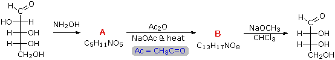

The ability to shorten (degrade) an aldose chain by one carbon was an importanat tool in the structure elucidation of carbohydrates. This was commonly accomplished by the Ruff procedure. An interesting alternative technique, known as the Wohl degradation has also been used. The following equation illustrates the application of this procedure to the aldopentose, arabinose. Based on your knowledge of carbonyl chemistry, and considering that the Wohl degradation is in essence the reverse of the Kiliani-Fischer synthesis, you should be able to draw structural formulas for intermediates A and B. Using the zig-zag chain tool, draw suitable formulas in the drawing window on the left without specifying substituent configurations. When you are finished, check your answer by pressing the appropriate Check Intermediate button. A help screen is available for the drawing window.
